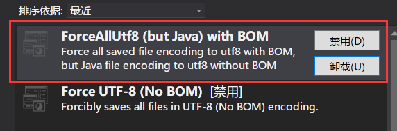
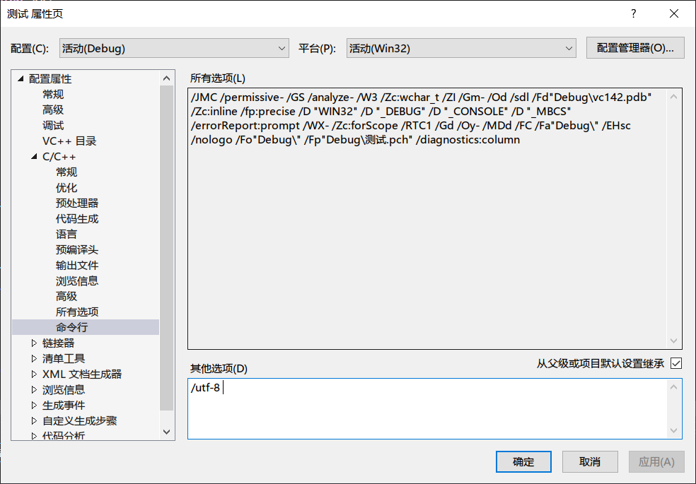
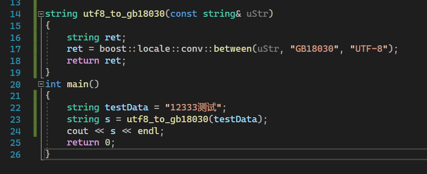
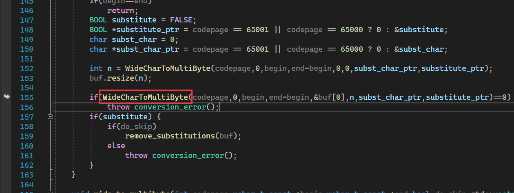

将UTF8转换成GB18030的疲倦过程
将UTF8转换成GB18030的疲倦过程
编码问题是个很恶心人的问题。—— 鲁迅没说过这句话
之前用C++开发过一个酷Q机器人插件（酷Q是一个基于Android QQ协议的QQ机器人软件，可以接收、发送各种类型的QQ消息），但是因为插件使用GBK编码的原因，插件无法发送emoji表情。
为了让这个插件能够发送emoji表情，必须修改插件程序使用的编码。
首先可以确定，酷Q的发送消息API用的肯定是GBK/GB2312之类的编码。因为插件在中文Windows+VS环境下开发，VS默认使用的编码就是GB2312（还是GBK？）。而我在调用这个API的时候，没有经过编码转换就能达到预期效果，也就是没有乱码。只有在发送文本里含有如Emoji、颜文字等特殊符号的时候，才会出现如 “????” 这种情况。
那么酷Q有没有什么发送消息的API是支持Unicode的呢？查阅资料后发现，酷Q的所有API使用的都是GB18030编码[1]。这种编码不仅对GBK/GB2312向下兼容，而且支持Unicode符号。酷Q使用这种编码是因为酷Q的插件大多用易语言开发，而易语言对Unicode的支持不好，如果使用GB18030编码就可以在保证一定的兼容性的同时支持Unicode符号。
我的插件发送的文本内容来自Web API，使用的是UTF8编码。在调用Web API获得文本内容后，需要把UTF8编码转换成GBK编码。都统一成GBK编码，标准输出、日志输出就不会出现乱码。我的想法是让整个程序都在UTF-8编码的环境下运行，也就是让标准输出、日志输出的文本的编码都是UTF-8。当然这样会有新的问题，中文Windows下CMD默认使用的是GBK编码，也就是说如果标准输出的文本是UTF-8编码，那么控制台黑框框看到的内容全都是乱码。不过我的插件没有用到标准输出，也就暂时不用担心这个问题。
MSVC使用UTF-8编码编译
要做到程序在UTF-8环境下运行，其实只需要把源代码的文件改成UTF-8编码。然而VS保存文件的编码在中文windows下默认是GB2312。为了让保存的文件是UTF-8编码，可以使用一个叫做”forceAllUTF8”的VS扩展。

我用的是图中框起来的那个插件，第一个扩展和第二个扩展的区别是有无BOM，但是Without BOM好像无法正常编译，提示非法字符”0xXXXX”，不知道什么原因（即使添加了参数 /utf-8 ）。
这还不够，MSVC对UTF-8的支持不够好，只做到这一步可能会无法编译，所以还需要在编译器的编译选项里加一个 /utf-8 参数。

在VS里把所有的文件都打开再保存，重新编译、执行，插件运行日志文件的编码果然变成了UTF-8编码。
将UTF-8编码转换成GB18030编码
我知道boost可以轻松做到编码转换。然而当我执行以下测试代码时……

得到的却是……
报错了！vector越界？
经过一系列的测试，发现只有在目标编码是GB18030的时候会出现这个错误。GBK to GB2312、UTF-8 to GBK 、 UTF-8 to GB2312都不会出错。
查了下资料（这里花了N个小时），发现这可能和boost::locale的实现方法有关。比如在Windows下使用MSVC编译boost，boost会使用Win32 API来实现boost::locale。翻了下报错点的调用栈，也确实发现了Win32 API。

继续查资料发现，编译boost::locale的时候可以指定使用ICU实现。而且vcpkg就可以做到个性化编译。那这就好办了！删掉原来的boost之后，直接执行:
1 | ./vcpkg install boost-locale[icu] |
然而事情并没有那么简单。使用了这个所谓的指定使用 [icu] 实现的boost::locale有同样的问题、而且一样调用了Win32 API，和之前没有任何变化。
找不到原因，不知道是vcpkg的问题还是boost的问题。没办法，只能暂时放弃使用boost，然后寻找到了同样有编码转换功能的 libiconv 。
使用 libiconv 的过程异常顺利。贴一下测试用的代码：
1 | string utf8_to_gb18030(const string& uStr) |
算是暂时解决的编码转换的问题。 libiconv 毕竟是个C语言库，传入的数组指针需要自己分配数组的空间。但是我并不知道转换之后的内容会占用多大的空间，为了防止越界直接设置为原大小的两倍，方法很暴力但是很有效。
[1] 让编写的应用在使用酷Q API时支持Unicode文本, https://cqp.cc/t/38233
将UTF8转换成GB18030的疲倦过程